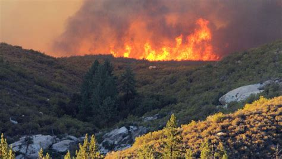
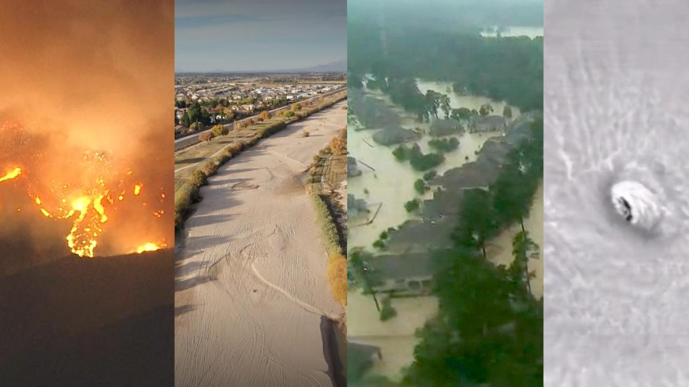

Main Page
Climate Change
What is climate change ?
Climate change, an escalating global crisis, is primarily driven by human activities that release excessive greenhouse gases into the atmosphere. Among the most significant contributors to this alarming phenomenon are the burning of fossil fuels for energy generation and transportation, deforestation, industrial processes, and agricultural practices. The emission of carbon dioxide (CO2), methane (CH4), and nitrous oxide (N2O) traps heat in the Earth's atmosphere, intensifying the greenhouse effect and leading to rising global temperatures. Consequently, climate change triggers a myriad of adverse effects, including more frequent and severe extreme weather events such as hurricanes, floods, and droughts. Glacial melting, sea-level rise, ocean acidification, and disruptions in ecosystems and biodiversity further exacerbate the crisis. Moreover, shifts in weather patterns impact agriculture, food security, water resources, human health, and the overall stability of ecosystems, posing grave threats to the well-being of both present and future generations. Addressing these contributors and their repercussions is crucial to mitigating the escalating consequences of climate change and safeguarding the planet.
How can we help it ?
Fortunately, a range of strategies exists to combat and alleviate the impacts of climate change. Transitioning to renewable energy sources like solar, wind, and hydroelectric power can significantly reduce reliance on fossil fuels, thereby curbing greenhouse gas emissions. Implementing energy-efficient technologies and practices in industries, transportation, and households is another crucial step toward mitigating climate change. Additionally, protecting and restoring forests, which act as carbon sinks, plays a vital role in offsetting carbon emissions. International cooperation and policies aimed at reducing emissions, such as the Paris Agreement, are essential for collective action and commitment to tackling this global issue. Moreover, promoting sustainable agricultural techniques, enhancing resilience to climate-related disasters, and investing in innovative technologies for carbon capture and storage are integral parts of the multifaceted approach needed to address climate change. Embracing these solutions, coupled with widespread awareness and individual actions, is pivotal in securing a sustainable future and averting the worst impacts of climate change.



What is green washing and is it bad ?
Greenwashing, a deceptive marketing tactic employed by companies, poses a significant threat by misleading consumers into believing that a product, service, or company is environmentally friendly when, in reality, it is not. This practice involves using misleading or false claims about sustainability, eco-friendliness, or environmental impact to attract environmentally conscious consumers. Companies may use terms like "natural," "eco-friendly," or "green" without substantiating their claims with genuine efforts to reduce their environmental footprint. Greenwashing not only leads consumers to make choices based on misinformation but also undermines legitimate efforts to address pressing environmental issues. It obscures transparency, making it challenging for consumers to discern truly sustainable products or practices from those merely capitalizing on the growing demand for environmentally friendly options. Consequently, greenwashing perpetuates complacency, hindering meaningful progress toward authentic sustainability goals and impeding the collective effort required to combat climate change and environmental degradation. This phenomenon ultimately erodes trust, compromises accountability, and impedes the crucial transition to a genuinely sustainable future.